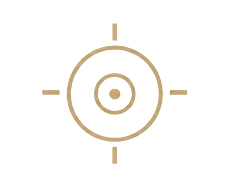

01Diagnostica
Test · Autoevaluación
Test de Fragmentación Emocional
Un cuestionario breve para identificar qué partes de ti se desconectaron en el camino.
Reconoce dónde dejaste de escucharte.

Biblioteca de RecursosUn espacio creado para ayudarte a comprenderte con mayor profundidad, desarrollar claridad emocional y comenzar tu proceso de reconstrucción interna a tu propio ritmo.
No todo proceso comienza con un programa. A veces comienza con una pregunta. Con una reflexión. Con una nueva forma de comprender lo que sientes.
Esta biblioteca reúne herramientas creadas para ayudarte a volver a ti con más claridad, conciencia y estructura emocional.
No es una lista — es una secuencia. Diagnostica, entiende, practica y mide: cuatro pasos gratuitos, en este orden, para empezar a observar tu mundo interno con estructura.
Un cuestionario breve para identificar qué partes de ti se desconectaron en el camino.
Reconoce dónde dejaste de escucharte.

Una guía para comprender el origen emocional de la desconexión y cómo empieza a sanarse.
Comprende la raíz, no solo el síntoma.

Una estructura suave para escribir y ordenar lo que sientes, día a día, sin perderte.
Dar forma a lo que aún no tiene palabras.

Las señales que indican que estás volviendo a escucharte — y las que piden atención.
Una brújula para tu día a día.
Cartas ocasionales con claridad psicológica y profundidad emocional. Sin ruido, sin urgencia: solo lo que de verdad ayuda a comprenderte.
Herramientas de mayor profundidad para avanzar con estructura. Tres territorios de trabajo — y dentro de cada uno, un orden.
Nombrar lo que sientes — el punto de partida de todo el trabajo.

Deja de tener emociones sin nombre. Al completarlo, puedes describir con precisión lo que sientes, identificar tus patrones y escribir desde la honestidad sin bloquearte. Sales con una práctica hecha — no con teoría leída.

Pasa de «estoy mal» a un lenguaje emocional preciso: localizar la emoción en el cuerpo, identificar su variante exacta y usarla como punto de partida para trabajar.

Nunca más en blanco frente al diario. 75 puntos de entrada en 3 niveles: lo que hay, lo que evitas, lo que construyes.
Distinguir quién eres de quién aprendiste a ser.

Un mapa real de tu arquitectura interna: heridas de fondo, patrones automáticos, la narrativa que te cuentas — y el inicio de una nueva.

Hacer las paces con quien fuiste sin borrarte. En 3 momentos: reconocer, separar y honrar la identidad que construiste para sobrevivir.
Responder en lugar de reaccionar.

Deja de reaccionar desde la activación. Tres herramientas para pausar, observar y elegir cómo responder — en situaciones cotidianas, no solo en calma.
Cada material se entrega en formato digital, para acompañarte a tu propio ritmo. El catálogo crece con el tiempo: nuevos materiales se incorporan con la misma intención y cuidado.
Cada paquete reúne un tramo completo del camino — y cuesta menos que sus materiales por separado.
El kit de entrada completo.
Vocabulario emocional + Escribir para encontrarte + Carta a la mujer que sobrevivía. Ahorras USD 20.
Para trabajar en serio.
Journaling + Mapa de claridad + Biblioteca de Ejercicios. Ahorras USD 36.
El camino entero, en tus manos.
Escribir para encontrarte + Mapa de claridad emocional + Biblioteca de Ejercicios completa — el mismo contenido del Pack Reestructuración — más reserva de cupo en la próxima cohorte disponible y USD 20 de descuento sobre el precio vigente al inscribirte. Válido por 6 meses desde la compra.
Si completaste alguno de estos materiales con honestidad, ya hiciste un proceso real. Si quieres hacer el siguiente tramo acompañada, existe Volver a Ti — un programa de 4 semanas, en grupos de máximo 8 mujeres.
Conocer Volver a Ti →